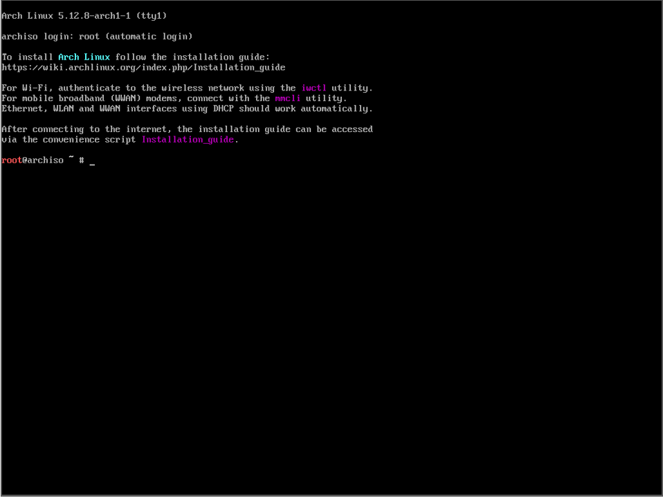
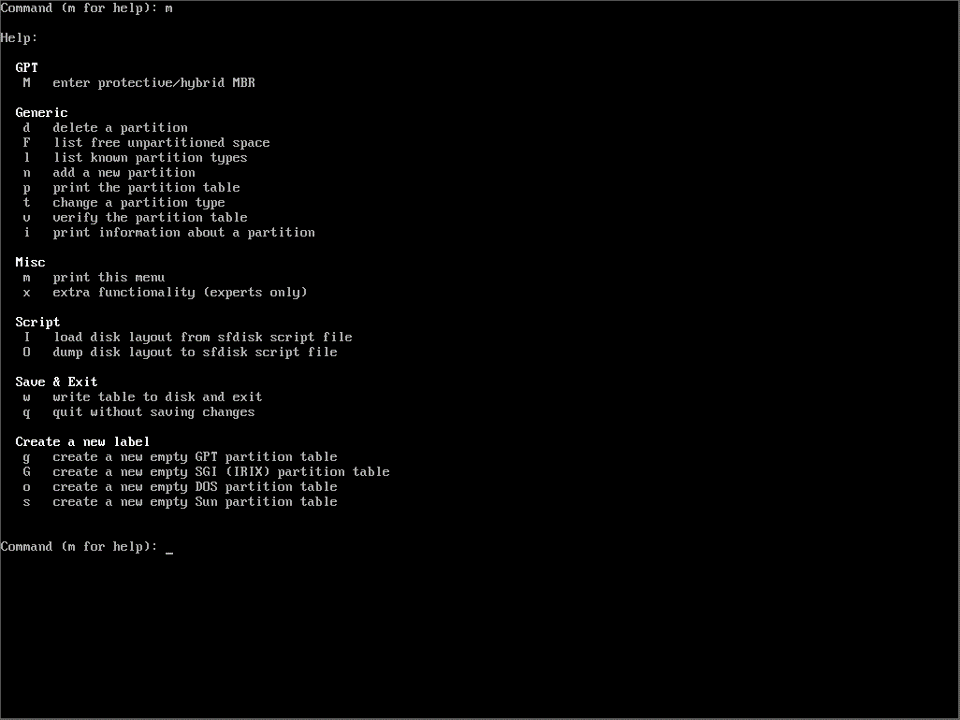
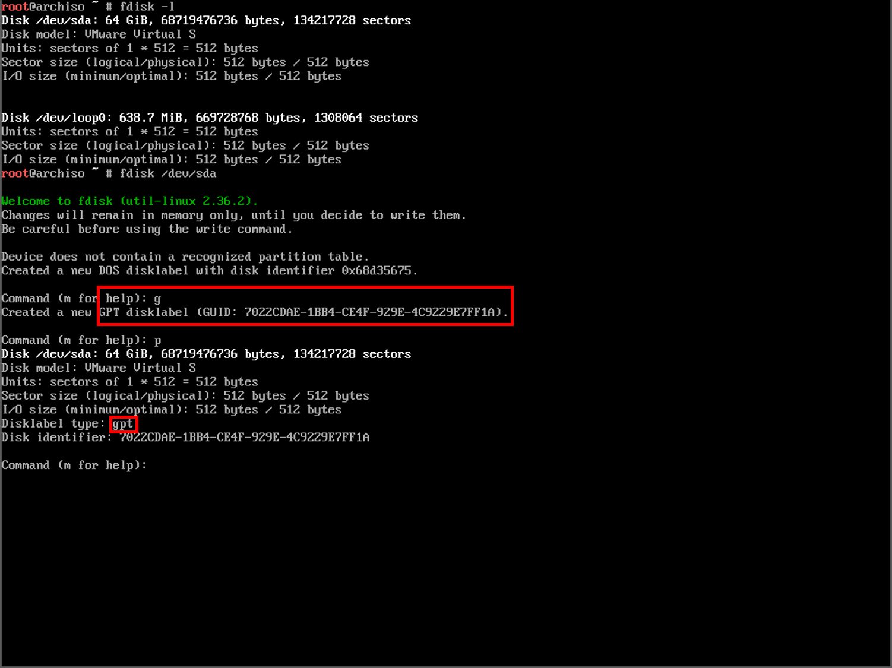
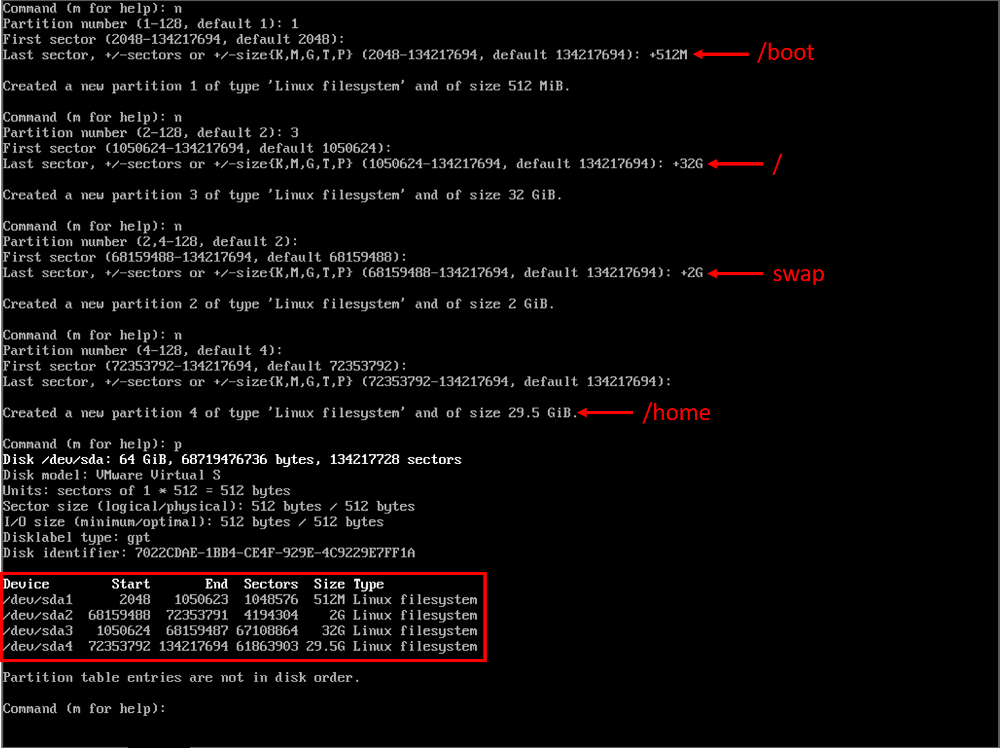
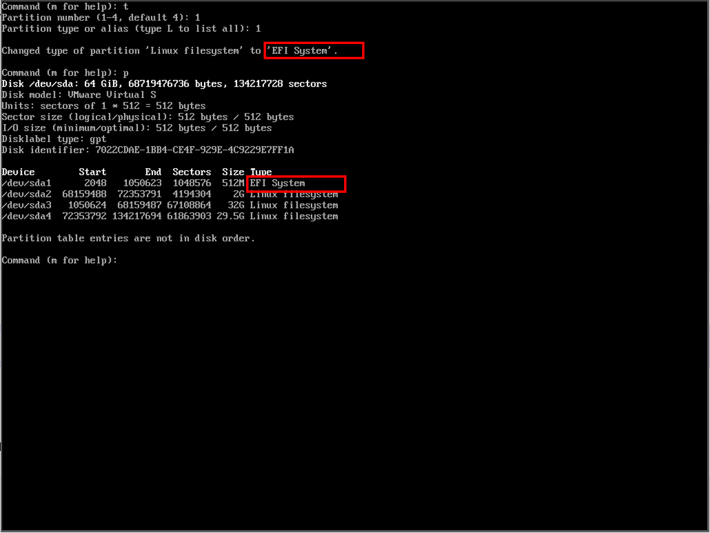
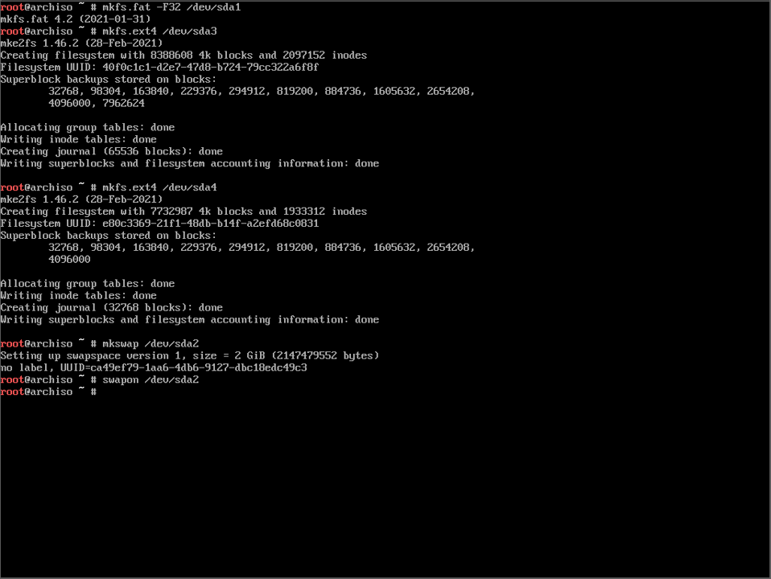
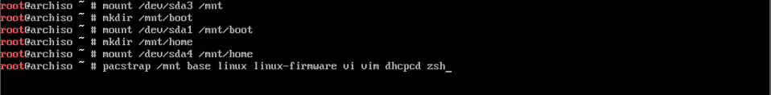
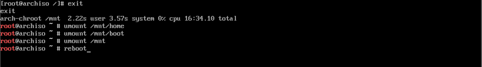
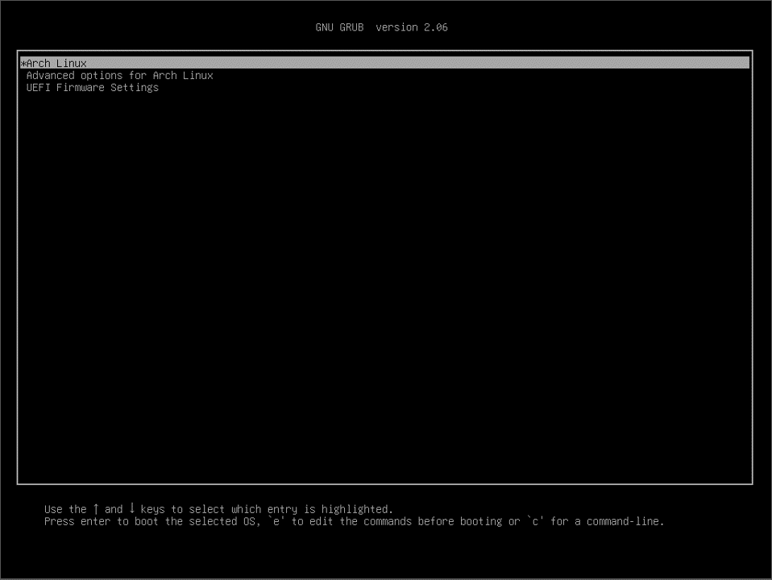

吐槽：因为之前hexo的tags和categories页面无法正常显示，在配置的过程中一不小心把原来的两篇博客都删掉了。尝试了用windows FileRecovery找了回来，确实是找回来了。
只不过，找回来的文件都无法正常打开，虽然名称和后缀都对，但是就是无法正常显示，无论是图片还是文字，都不行。只能重写了。这一篇还好，是我不久前写的，但是另一篇是很久之前写的了。
如果以后还有时间的话，再补回来吧。这回长记性了QAQ
安装前
- 下载Arch Linux以及制作安装介质（物理机安装）。
- 准备好官方的安装文档。
UEFI 还是 BIOS+MBR ？
如果不确定自己的电脑是EFI启动还是BIOS+MBR，可以先进入安装界面，输入
1 | ls /sys/firmware/efi/ |
如果有内容输出的话，就是EFI，反之就是BIOS+MBR。
注意：这篇文档只会介绍EFI启动模式下的安装。
VMware下，如果想采用EFI启动，可以按以下步骤：
- 创建好虚拟机但是不要直接运行；
- 找到你创建的虚拟机目录下的后缀为
*.vmx文件； - 用你喜欢的文本编辑器打开，在其中加入：这样开始虚拟机之后就是
1
firmware = "efi"
EFI启动了。
参考
- 官方安装文档
- Bilibili up主：TheCW -> Arch Linux安装视频
几句想说的话
如果你真的找到了这篇文档，说明你应该像我一样很喜欢折腾这些东西。如果这篇文档真的帮助到你，我会非常开心也会感到非常荣幸。我的很多知识都来源于开源社区无私的分享者们，我也会努力分享我能够分享的一切，希望你也能将开源社区的精神传递下去，谢谢。
开始
来到启动界面开始安装，进入之后会看到下面的界面：

如果觉得字体比较小看着不舒服，可以输入以下命令调整字体大小：
1 | setfont /usr/share/kbd/consolefonts/LatGrkCry-12x22.psfu.gz |
所有的console字体都放在/usr/share/kbd/consolefonts/这个文件夹下，你也可以选择其他你想用的字体。
网络设置：
我推荐在安装时插一根网线，方便很多。VMware下就相当于已经为虚拟机插了网线了。如果需要链接Wi-Fi，可以参考以下命令和参考目录下的视频:
1 | ip link show # 查看接口名称 |
现在，我们可以尝试ping一个网址，看看网路是否已经连接好了。
1 | ping www.archlinux.org |
如果有正常的输出，我们的网络就配置好了。注意，一定要有网络连接，我们安装的时候会需要网络。
更新系统时钟：
1 | timedatectl set-ntp true |
如果你有其他的需求，比如更换键盘布局，请参考官方安装文档。
分区（重要）
有带有图形界面的分区工具，例如cfdisk，我这里还是用fdisk。首先，我们输入fdisk -l，查看一下我们当前磁盘的名称，如下图所示，我的磁盘名称是/dev/sda。
输入fdisk /dev/sda，进入fdisk开始分区。

如果不熟悉fdisk也没关系，可以输入m查看使用帮助：

我打算为我的系统分以下四个区:
- /boot：用来作为启动分区，512M
- swap：用来作为虚拟内存，2G
- /：根目录，32G
- /home：家目录（optional），剩余磁盘空间
下面我就根据以上，开始在这个磁盘上制作分区。
首先输入g将现在的磁盘变为GPT格式：

之后输入n产生一个新的分区，接着分区编号，可以看到从1到128都可以；再之后输入起始位置（默认就好），之后输入终点位置，输入形式为<+Capacity>，例如+512M或者+2G，一定不要忘记加号。
按照之前我设想的分区，将以上过程重复几遍，如下图所示（我没有按照1234编号，按个人需求配置），这时再输入p查看我们刚刚告诉给fdisk的分区指令：

可以看到我们分区已经显示出来了，但是这时fdisk还没有将这些分区写入，在我们输入写入指令之前，fdisk不会更改我们的磁盘。现在输入w写入。写入完成后fdisk会自动退出，回到root下。
以下为optional，刚刚已经写入了也没关系：我们也可以在fdisk下更改分区的文件系统，输入t告诉fdisk我们要更改分区的文件系统，这时fdisk会要求我们输入分区的编号，再输入想要改到的文件系统的编号，例如我们更改/dev/sda1为EFI file system，输入t，输入分区编号1，再输入文件系统的编号1，我们就把/dev/sda1从Linux file system改为了EFI file system。

现在我们可以为我们刚刚写入的分区制作对应的文件系统。在命令行中一次输入以下指令：
1 | mkfs.fat -F32 /dev/sda1 |
如果不记得自己的对应分区名称，可以输入fdisk -l查看。输入指令时如下图所示：

现在我们将/mnt挂载到对应的分区上。输入以下命令：
1 | mount /dev/sda3 /mnt |
真正的安装
安装脚本Arch Linux官方已经给我们准备好了，输入以下指令：
1 | pacstrap /mnt base linux linux-firmware |
我建议在这一步后面加上其他比较重要的的软件包，例如文本编辑器（vi/vim/nano/emacs），网络配置工具（dhcpcd，wpa_supplicant）等。
其实在这之前会有教程提示说更改源，不过最新的arch linux安装的时候会自动把离你最近的源放到最前，不需要再更改了。
输入以上命令之后，等着安装完成：

重要配置
- 首先生成fstab文件
1
genfstab -U /mnt > /mnt/etc/fstab
- 现在，我们登录进刚刚安装好的系统：
1
arch-chroot /mnt
- 设置区域和时间这里Asia/Singapore可以改成其他的地区，看你自己所在的地理位置。
1
ln -sf /usr/share/zoneinfo/Asia/Singapore /etc/localtime
- 设置硬件时钟
1
hwclock --systohc --utc
- 本地化
这里默认你已经在刚刚安装的时候安装好了一个文本编辑器，如果没有，输入pcaman -S <your-favoriate-editor>安装
打开文件/etc/locale.gen
1 | Editor=<your-favorite-editor> /etc/locale.gen |
找到en_US.UTF8 UTF8，去掉这一行注释，保存退出后，输入：
1 | locale-gen |
再用<你喜欢的编辑器>打开/etc/locale.conf，写入：
1 | LANG=en_US.UTF8 |
保存并推出。
- 编辑localhost和hosts
用<你喜欢的编辑器>打开文件/etc/hostname，写入：
1 | myarch |
这里这个hostname写啥都行，我就直接写了myarch。保存并推出。
再用<你喜欢的编辑器>打开文件/etc/hosts，写入：
1 | 127.0.0.1 localhost |
这里把myarch换成你自己刚刚在hostname中写入到名称。保存并推出。
- root密码
在命令行中输入
1 | passwd |
创建你的root密码，千万要记住这个密码。
安装引导（重要）
输入以下指令安装grub和其他必要的软件包：
1 | pacman -S grub efibootmgr intel-ucode os-prober |
注意：如果你在安装双系统的话，再多安装一个
ntfs-3g。在进行以下步骤之前，找到文件
/etc/default/grub，在其中加入以下，然后保存退出
1 | GRUB_DISABLE_OS_PROBER=false |
创建文件夹/boot/grub，命令行中输入
1 | mkdir /boot/grub |
生产grub配置文件，命令行中输入：
1 | grub-mkconfig > /boot/grub/grub.cfg |
安装grub-efi引导，命令行中输入：
1 | grub-install --target=x86_64-efi --efi-directory=/boot |
如下图所示：

如果你再安装系统时还没有安装网路工具，现在一定要安装，否则一会安装完成之后重启，arch没有网络连接。需要的工具在之前有提到。
1 | pacman -S dhcpcd wpa_supplicant |
准备重启
重启之前，先退出这个安装好的系统
1 | exit |
然后把之前mount上去的umount掉。
1 | umount /mnt/boot |
输入reboot重启

如果出现grub的引导界面：

恭喜！安装正式完成啦！开始玩耍吧！

不过可以看到，现在我们是root用户，而且整个系统没有图形界面。下一篇文档我会写安装图形界面的过程以及添加普通用户。
欢迎加入Arch。